Typhoon-Dynamics - Week 2#
日期: 2026.03.04
西北太平洋颱風生成機制與環境場#
一、 觀測現象與大環境背景 (Background Conditions)#
在探討颱風動力學時，我們必須先認識到地域性的差異。許多教科書偏重於大西洋的觀測，但在我們所在的西北太平洋，情況有些不同。
海洋熱含量 (Ocean Heat Content, OHC)： 在大西洋，OHC 是決定颱風生成的關鍵限制因素；但在西北太平洋，因為整體的 OHC 通常已經非常大（不缺乏熱量），所以它反而不常被視為此區域颱風生成的最關鍵變數。
降雨的氣候趨勢： 觀測 1979 年到 2008 年的數據可以發現一個現象：「濕的地方越濕，乾的地方越乾」(Moist gets moister, dry gets drier)。這代表熱帶的上升氣流與副熱帶的下沉氣流都在增強，整體環流發生了改變。
西北太平洋的獨特結構：
低層大氣： 存在一個巨大的季風槽 (Monsoon Trough)，這是西風（西南季風）與東風（副熱帶高壓帶來）交會的大低壓區。
高層大氣： 由於季風降雨釋放潛熱，高層會形成大高壓。當高層質量往外擴散（羅斯貝波能量頻散，Rossby Wave Energy Dispersion），會在周圍形成槽線，例如 TUTT (熱帶對流層上部槽)。
上下顛倒的斜壓結構 (First Baroclinic Mode)： 下層低壓、上層高壓的配置，造就了較小的垂直風切，這也是西北太平洋有一半的颱風都在季風槽內生成的原因。
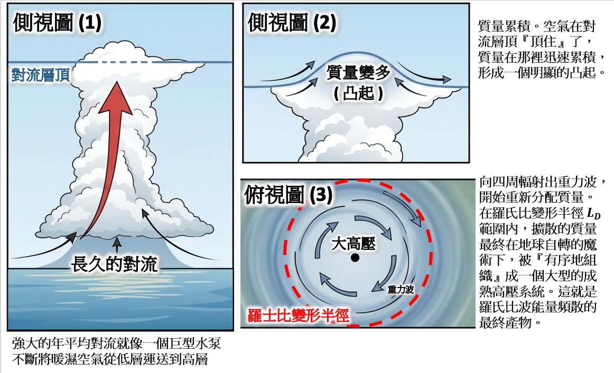
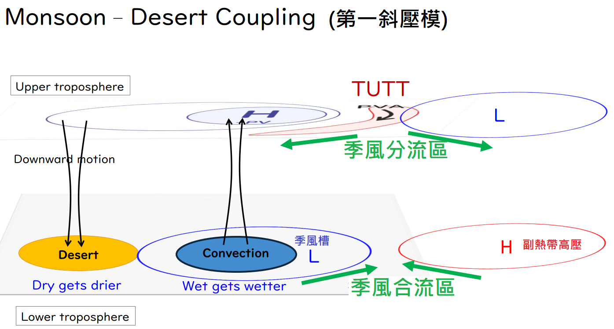
大氣的氣候背景並不是一塊鐵板，而是充滿著低頻率的變化，這就是季內震盪 (ISO)。
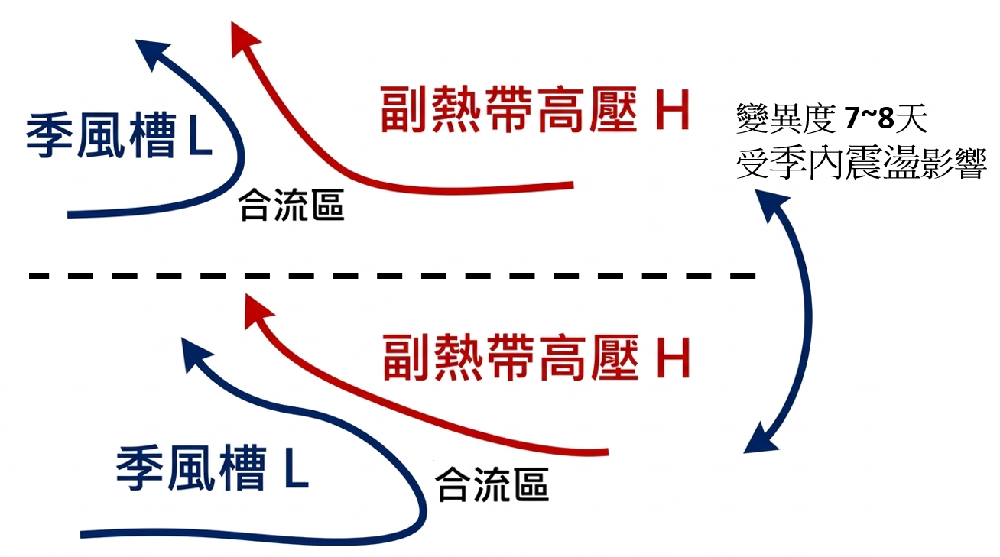
大氣的呼吸： 老師打個比方，副熱帶高壓的強弱變化就像是大氣在「緩慢地呼吸」，有時候強（熱到爆），過幾天又慢慢減弱，週期大約落在 7 到 10 天。
變異度最大的「走廊」： 氣象學家 Gabriel Lau 在 1997 年的研究中尋找夏天天氣圖上變化最大的區域。結果發現，最大的變異度出現在副熱帶高壓與季風槽的合流區，並沿著高壓邊緣向西北延伸。
比喻： 就像一間教室，大家都坐在位子上時變異度很小；但「走廊」上總有人來來去去，所以變異度最大。這個天氣系統的「走廊」週期大約是 6 到 8 天，每隔這段時間改變當前的大氣基本狀態。當這個呼吸特別強的時候就會孕育出颱風。
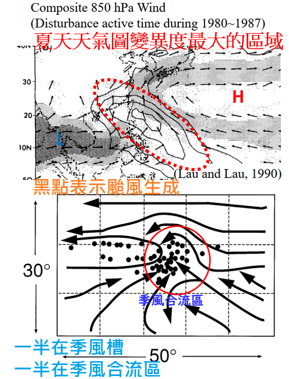
年時間尺度的震盪導致颱風生成位置不同

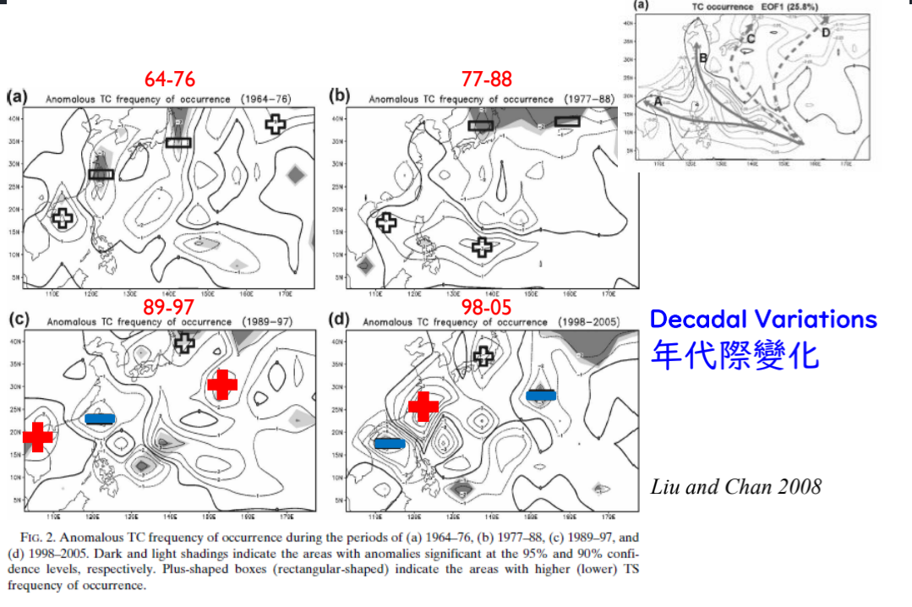
例子: 2020台灣無颱風
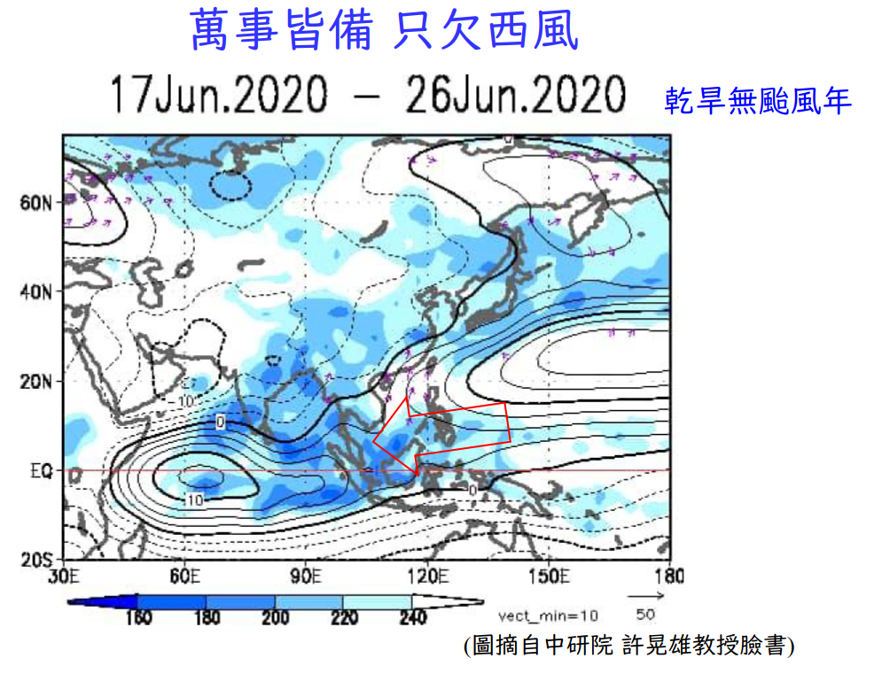
三、 動力機制：正壓不穩定與能量轉換 (Barotropic Instability)#
為什麼在季風合流區，小小的天氣擾動特別容易長大變成颱風？這背後的核心機制是正壓不穩定 (Barotropic Instability)。我們來一步步推導這個物理過程。
步驟 1：雷諾分解 (Reynolds Decomposition)#
為了解析複雜的風場，我們將實際風場拆解為「大環境氣候平均場」與「微小的天氣擾動場」。 假設東西向風速為 \(u\)，南北向風速為 \(v\)： \(u = \bar{u} + u'\) \(v = \bar{v} + v'\) （其中 \(\bar{u}\) 是季風槽的背景風場，\(u'\) 則是颱風胚胎的擾動）
步驟 2：擾動動能方程式#
我們關心的是擾動會不會長大，也就是單位質量的「擾動動能」 \(\overline{K'}\) 隨時間的變化。定義擾動動能為：
將雷諾分解後的風場代入水平運動方程式，對時間取平均並化簡（忽略摩擦力等次要項），我們可以得到決定擾動生死的「正壓能量轉換項」或「風切產生項」(Shear Production)：
步驟 3：物理意義與大河漩渦的類比#
這個公式代表什麼意思呢？老師用一個比喻來解釋：
大河 (背景場 \(\bar{u}\))： 季風槽區域南邊吹西風、北邊吹東風，這就像一條寬闊的大河，不同緯度的水流速度方向完全不同，產生了極大的水平風切 (\(\frac{\partial \bar{u}}{\partial y} \neq 0\))。
小漩渦 (擾動場 \(u', v'\))： 雷諾應力項 \(\overline{u'v'}\) 代表了這些小擾動的形狀與旋轉方向。
當小漩渦的旋轉結構剛好配合大河的風切流速差異時，公式右邊的計算結果會大於零。這意味著：
小漩渦（擾動）成功從大河（季風槽背景場）身上「偷走」了動能，讓自己越來越強大，最終發展成颱風。這就是季風槽成為颱風溫床的最主要動力學原因。
熱帶波動#
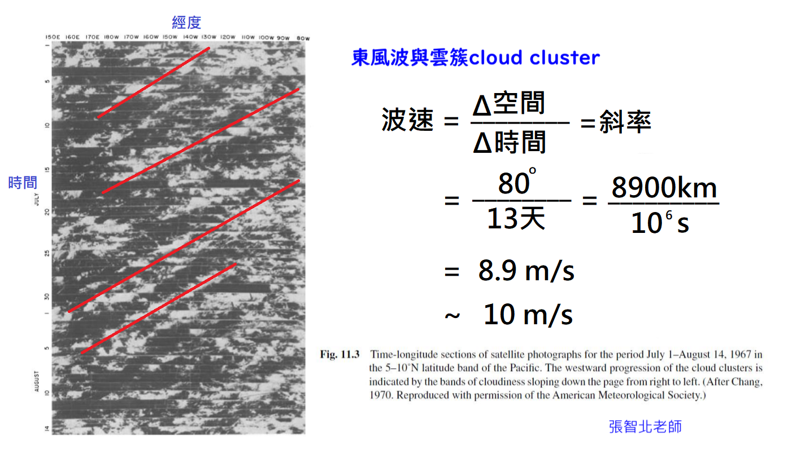
熱帶Beta效應明顯(\(\sin \phi\))，Rossby wave容易頻散，但是仍看到波動因為 對流 將 渦度 鎖住了
壹、 颱風的群聚與連續生成機制#
1. 背景：MJO 與東西風合流 (Monsoon Trough)#
傳統認知衝突：東太平洋背景上幾乎都吹東風，理論上很難產生東西風的「合流」。
MJO 的關鍵角色：當「馬登－朱利安震盪 (MJO)」移入時，會減弱背景東風，甚至產生「西風異常 (westerly anomaly)」。在 MJO 移入的剎那，創造了短暫但強烈的東西風合流區。
群聚現象：颱風生成並非均勻分布於季節中，而是呈現「不生成則已，一生成就是連續生成」的群聚特徵。取得生成「門票」（初始擾動）的數量在 MJO 活躍期大幅增加。
MJO與環境 提供了 \(10^{-4} [\text{s}]\) 渦度
合流、disturbances使TD數量增加，TD變TC的比例在有沒有MJO都一樣，只是有MJO會使TD數量變多
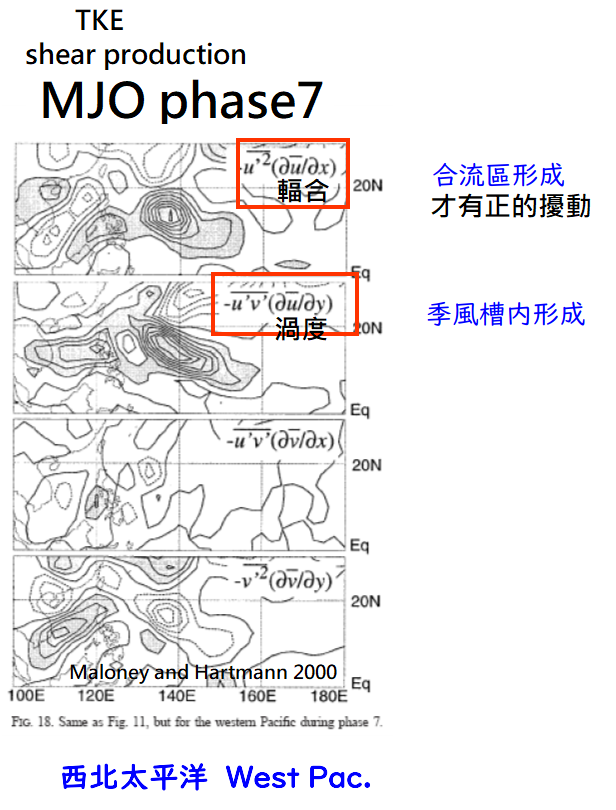
2. 連續生成的三大動力機制#
在東西風合流區，颱風通常會每隔 5~6 天、相距約 2000 公里連續生成，這背後有三個核心物理過程：
波能量累積 (Wave Energy Accumulation)：
東西風合流區存在極大的環境風切。東風波（波長約 2000 公里）進入此區域時，其群速度 (Group Velocity) 會趨近於零。
波能量無法頻散，全數聚集於此，引發強烈對流。
正壓不穩定 (Barotropic Instability)：
當波動振幅變大進入非線性階段，波形在南北向發生變化。
強烈的水平風切會將「大尺度背景東西風的動能」轉換為「波的動能」，使擾動迅速增強為颱風。
羅斯貝波頻散 (Rossby Wave Dispersion)：
第一個颱風生成後，其能量會以羅斯貝波的形式向東輻射頻散。
這股向東傳遞的能量會觸發下一個擾動，進而長出第二個、第三個颱風。
颱風頻散出去的能量可以激發另一個颱風
💡 老師的物理小教室：群速度與能量累積 類比：你可以把「相速度」想像成單一輛車的速度，而「群速度」是一整批車隊（車潮）前進的速度。當車隊開到一個道路施工、車道縮減的地方（極大的背景風切區），車隊前進的速度（群速度）降為零。這時後面的車不斷湧入，車子全部擠在一起（能量累積），這個能量的「大塞車」就成了颱風爆發的最佳溫床。
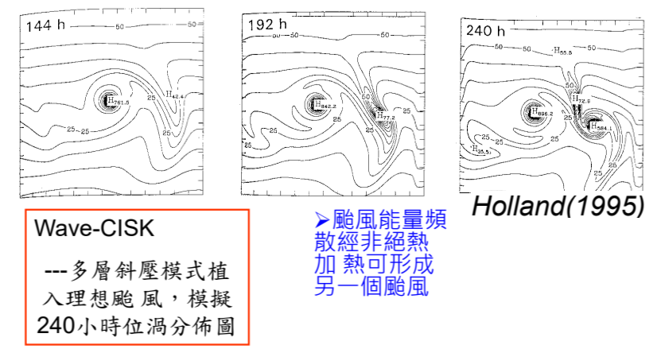
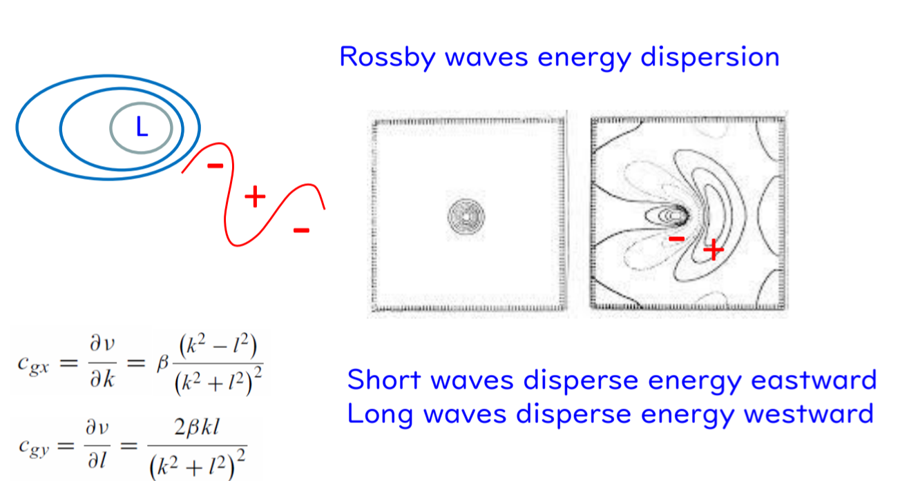
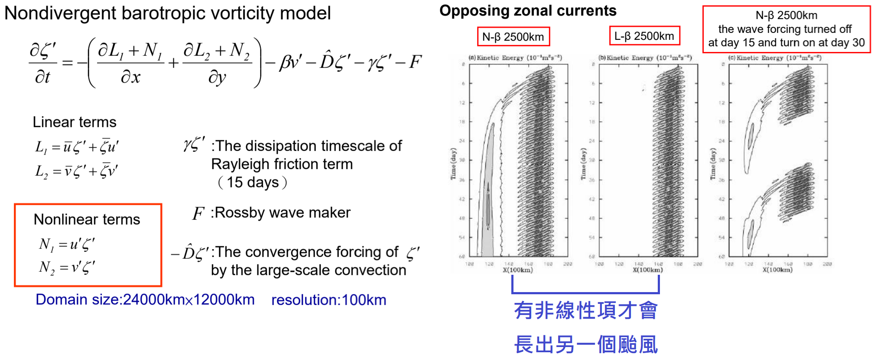
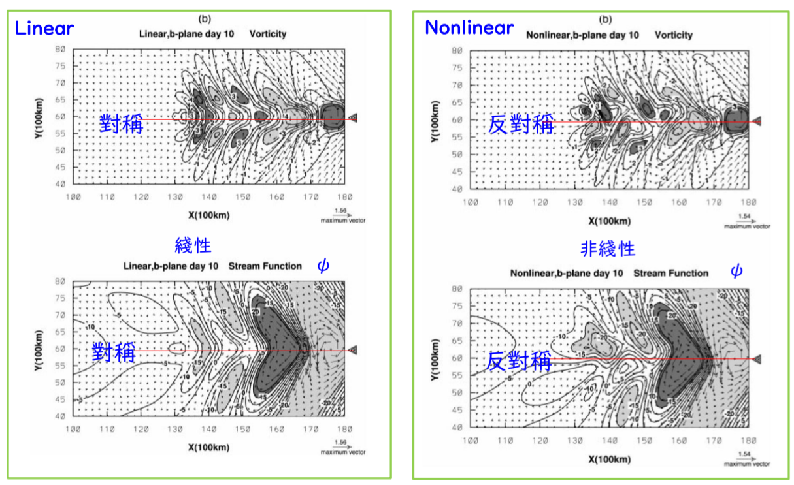
當空間被壓縮， \(\nabla \phi\) 很大、非線性項重要時，更應該關注Beta driver
Beta driver使颱風往西北邊走
Beta driver使高氣壓往西南邊走(如果有)
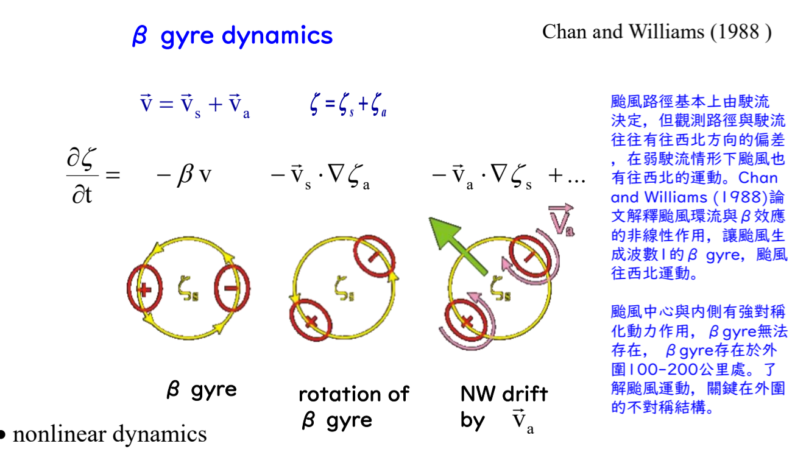
Beta Rossby 數 (\(R_\beta\)) 越大，代表渦漩越「小」且轉得越快，它反而「感受不到」地球的 Beta 效應；相反地，渦漩尺寸越「大」，\(R_\beta\) 會越小，這時它才會強烈感受到 Beta 效應，會使的颱風能量很快地被頻散掉。
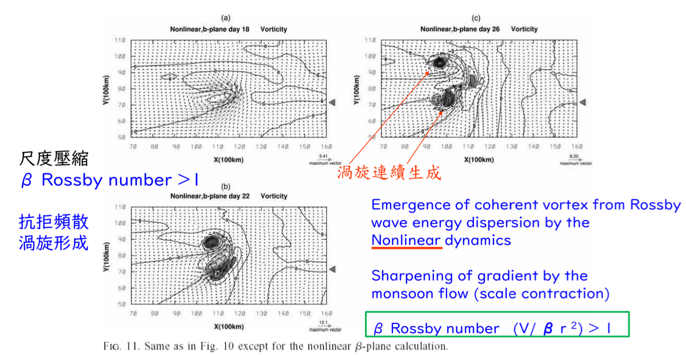
貳、 AI 在氣候科學的應用與極端天氣#
分佈動力學 (Distribution Dynamics)： 氣候變遷不只要看「平均值」上升，更要看「變異度 (Variance)」的改變。如果變異度變大，極端天氣就會增加。
傳統模式的困境：高解析度數值模式運算昂貴，導致樣本數 (sample size) 嚴重不足，難以準確評估變異度。
AI 模式的突破 (如 AI2 的 S2 模式)： AI 模式的運算速度比傳統模式快了一萬倍，使得樣本數可以大幅擴增（像是一次一塊錢可以量 1000 次溫度）。但在應用上，必須證明 AI 預測結果符合「物理機制」，而不僅是「資料經驗的擬合」。
參、 颱風結構：為何會有螺旋雨帶？#
觀測特徵：颱風擁有眼牆 (eyewall) 與外圍的螺旋雨帶 (spiral rainband)。
動力機制：
颱風中心釋放潛熱產生強對流，這些熱源會向外激發出慣性重力波 (Inertia-gravity wave)。
由於颱風內部風速極快，具有極大的相對渦度 (Relative vorticity) 與慣性頻率 (Inertial frequency)。
波動向外傳遞時，被強烈的背景旋轉流場牽引、拉扯，最終頻散並呈現出我們在雷達回波上看到的「螺旋狀」特徵。
肆、 台灣地形效應與極端降雨機制#
1. 降雨量增加的關鍵：「移速變慢」#
分析台灣過去 60 年（19 個測站）的降雨資料發現，近 30 年颱風總雨量大幅增加（+37%~64%）。
觀測事實：登陸前與登陸期間，侵台颱風的「每小時降雨率」並未顯著增加。總雨量飆高，最直接的原因是**「颱風停留時間變長（走得慢）」**。
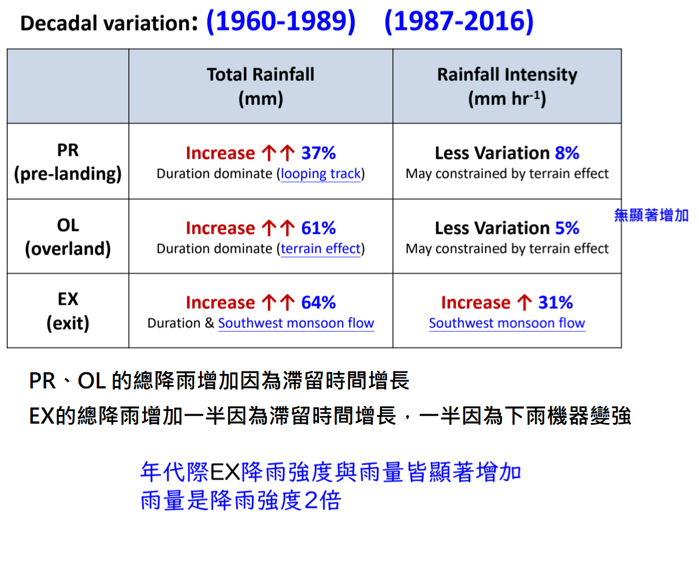
2. 地形鎖定與「慢颱風」的群聚#
空間分佈異常：歷史上移速最慢、帶來極端降雨的颱風（會打轉、停滯），幾乎全數集中在台灣北邊登陸。這絕對不是巧合，而是地形機制的影響。
動力學解釋：Wave Number 1 與渦度拉扯：
當慢速颱風從台灣北邊移入時，環流會將水氣帶入台灣南邊的山區。
南部山區被迫抬升，產生強烈的對流與非絕熱加熱 (Diabatic heating)。
對流不斷向上抽氣，導致南部局部地區的渦度異常變大（正回饋機制）。
颱風前方的渦度變大、後方變小（這是一種 Wave number 1 的不對稱分佈）。這個南部生成的「渦度異常區」就像一顆磁鐵，將北邊的颱風主體往南「拉住」，使得颱風移速變得更慢。
💡 老師的物理小教室：角動量守恆與渦度伸展 (Vortex Stretching) 在這裡我們用到了一個很基礎的數學定理：渦度方程式 (Vorticity Equation)。 簡化後的渦度方程式中有一項叫做「伸展項 (Stretching term)」： \(\frac{d(\zeta + f)}{dt} = -(\zeta + f)(\nabla \cdot \vec{V})\)
\(\zeta\) 是相對渦度（旋轉的強度），\(\nabla \cdot \vec{V}\) 是水平輻散。
當南部山區下大雨，低層大氣會產生強烈的輻合（即 \(\nabla \cdot \vec{V} < 0\)）。
負負得正，這會導致 \(\frac{d\zeta}{dt} > 0\)，也就是渦度隨時間快速增加！
類比：這就像是在冰上旋轉的滑冰選手（角動量守恆）。當對流把空氣往上抽，等於是滑冰選手把向外伸展的手臂「往身體收縮」，這時她旋轉的速度（渦度）就會瞬間飆高！這股新生成的旋轉力量，就成了拉住颱風減速的關鍵。
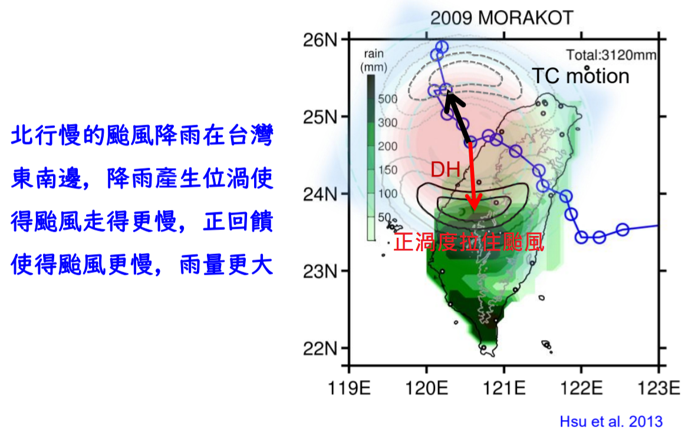
3. 後向建構 (Back-building) 與西南氣流#
除了移速慢，颱風引進的西南氣流若與地形交互作用，會在迎風面或海面上游不斷長出新的對流胞，並接連移入陸地。
這種現象稱為「後向建構」，是造成平地（如嘉義平原、小林村事件）發生大範圍、長時間致災性豪雨的主因。